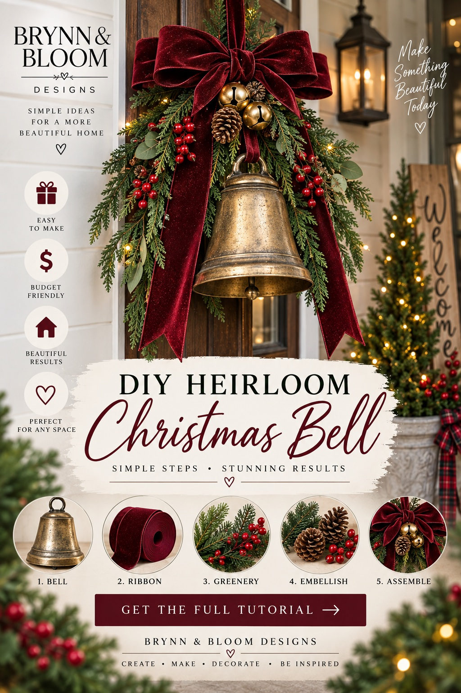

SEASONAL MAGIC / THE EASY DIY EDIT
A Vintage-Look Christmas Bell from a Simple Decoration
Turn one inexpensive large plastic flowerpot upside down into a lightweight heirloom-style Christmas bell. Give it an aged-brass finish, then dress it up with an oversized burgundy velvet bow, cascading greenery, red berries and pinecones.

Shop Everything to Make This Look on Amazon ↗
THE LITTLE TRANSFORMATION
Make the look in five steps
- Choose a large plastic flowerpot. Find a lightweight pot with a flared rim and a drainage hole, approximately 10–14 inches across. Turn it upside down: the pot becomes the bell body and the flared rim becomes the bell opening. Wash, dry and lightly scuff the surface if recommended by your paint manufacturer.
- Paint the flowerpot antique brass. Use primer and metallic paint labeled for plastic, following drying and ventilation instructions. Apply light coats. Once fully cured, dab dark brown acrylic paint or antiquing wax into the grooves and around the rim, then wipe back for a weathered heirloom finish.
- Make an oversized bow. Form generous loops with wide burgundy velvet or velvet-look wired ribbon, secure the center with floral wire, and leave two long tails that hang past the bell.
- Build the greenery cluster. Layer several faux cedar, fir or pine stems around the top of the bell, letting some cascade down the sides. Tuck in faux red berry picks and a few small pinecones; attach securely with floral wire.
- Add a hanging loop and optional clapper. Thread sturdy cord through the pot’s existing drainage hole and secure it with a large washer or internal knot that cannot pull through. If your pot has no suitable hole, drill only if the pot material permits and use eye protection. Hang a lightweight ornament or small bell inside as an optional clapper; it does not need to ring.
- Assemble and display. Secure the greenery and velvet bow above the flowerpot bell, add small gold accent bells if desired, and hang from hardware rated for the completed weight. Keep it clear of door swings and heat.
AI-generated concept image, not a photograph of a completed handmade item or an exact Amazon product. The reference image depicts a finished metal-bell look; the flowerpot version is a budget-friendly interpretation, not a photographed finished build. Test the hanging cord and washer before display. Do not rely on adhesive alone for suspension; keep décor away from flames and heat.